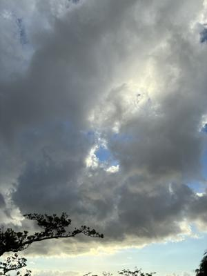
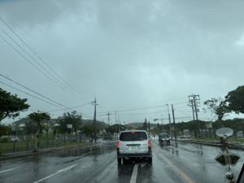
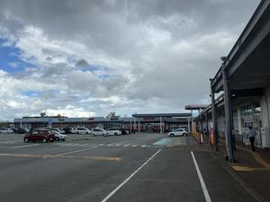

うるがいの話 ある日
最新: イオンタウン読谷【うるがいの話 ある日】とは 一日だけのプログです
『うるがいの話』の最新一日だけのプログで、通信料が少なく経済的だ。カニの画像をクリックすると全ての日付が載る『うるがいの話』サイトを表示します
|
|
【うるがいの話】 うるがい(ｳﾙｶﾞｲ urugai)とは、『もずくがに』の名前でとても大きくなります。 |
|---|---|
|
|
【カミマヤーの話】 猫のことを方言でマヤーといいます。カミマヤー（kamimayaa）とは、神の猫のことです。 |
|
【たながぁの音楽】 たながぁ（ﾀﾅｶﾞｰ tanagaa）とは手長えびのことで、何種類かあり大きいのは車 エビぐらいになります。 |

|
【ぶながぁの話】 ぶながぁ(ﾌﾞﾅｶﾞｰ bunagaa)とは、赤い髪の毛、赤い身体、そして身長は１ｍ２０ｃｍ ぐらい、川の蟹を食べているの目撃された。場所は沖縄県国頭郡大宜味村のと ある村僕の隣近所に住んでいる爺さんから、聞いた話です。 |
|
|
【ギーマの話】 ギーマ(giima)とは、山原の里山に咲くスズランに似た、 花を付けます。実は食べられます、 気が付くと口の周りが紫になっています。 |
2026年09月17日 (木）イオンタウン読谷
15:13

読谷って、北谷ではないよね。嘉手納の上の方だよねと自動車道
路を走らす。途中ザーザー降りになる、と周りの車はハザードラ
ンプを点ける、ン、ハザードランプっているのけと言うと『外国
人だよ』とコドモが言う、確かに彼らはレンタカーだ。沖縄北で
自動車道路を降りる、ン、なんか、違うような・・・、スゴイ田
舎道を走る、初体験の道だべ、コドモがナビを見て指示を出す。
周りは基地、こんな所？。おまけに雨は降るし

ま、でもそれなりに目的地イオンタウン読谷に着く。１時間待っ
てとコドモは、訪問先に入っていく。辺りをウロウロ、こんなと
ころあったけ（開業年月日：２００８年４月）。しかたなく、時
間を潰すため、パン屋さんでパンとアイスコーヒーを店内で頂く
さすが、読谷だ。外人がチラチラ

そして、１時間後、次のライカムへ行く。後部座席に乗っていた
コドモが、『習近平がインドで倒れたらしい』と言う。ホー、外
国の情報らしい（テレビでは一切報道はないが）。そうそう、時
価８億３４００万円の金の延べ棒匿名希望の寄付は、いい話だ。
市川市動植物園のニホンザル・パンチくんの入園料；大人４４０
円（税込）小人１１０円（税込）（未就学児無料）も安くていい
ね。７から９年ふりにライカムへ。多い！、人が。そして、コド
モの仕事を終え１７時過ぎに家に戻る。